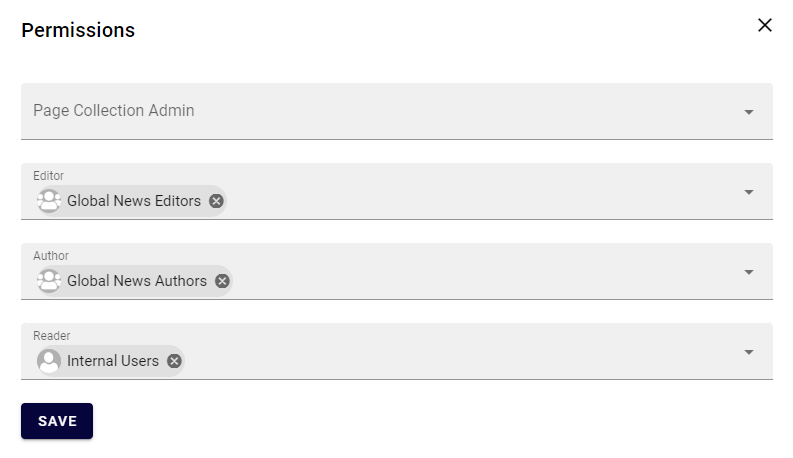
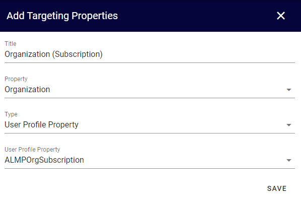
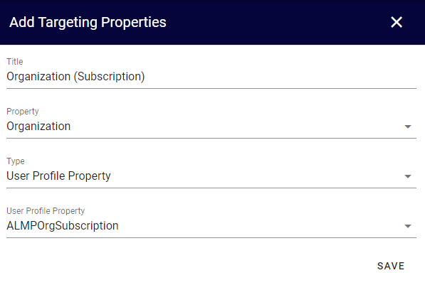

News Management¶
With Omnia, you can establish a solution for news management within your intranet.
Start off by watching this introductory video.
Here is a summary of the best practice recommendations:
Before you start the implementation of your news management solution, make sure that you have established an information model that can serve as a basis for which tool to use for what.
Official global news are setup in a separate publishing app and:
Are managed by a group of global editors.
Use scheduling to plan ahead.
Supports translation using the variation system.
Use approval to support local authors.
Have a structured set of news types and add the possibility to highlight promoted news.
Official local news are setup in a separate publishing app and:
Have a large group of local authors that own their own news articles and can invite co-authors on demand.
Have a set of properties setup that can be used to target the news articles to the correct audience.
Are using the user profile to make targeting and subscription available.
Official news can reach the correct audience by:
Showing promoted news on the intranet start page.
Targeting news using the notification panel.
Setting up a news center with different top lists and possiblitiy to search for news.
Deploy the Omnia mobile app, newsletters and the digital signage solution.
Team announcements and posts:
Use teamwork to manage news targeted to a small group (< 50 people).
If you are using Microsoft Teams, use a specific announcement channel for official news and the general channel for non-official news.
If you are not using Microsoft Teams, use SharePoint Team News for official news and Omnia teamwork posts for non-official news.
Community and organization-wide posts:
Use Omnia community posts to communicate non-official news to a community.
In a small/mid-sized organization, you can allow organization-wide posts either in Microsoft Teams or by using Omnia organization-wide posts.
Follow the steps below to setup a solution based on the recommendations above.
Note
The instruction is based on Omnia 6.10. If you have another version installed, some labels, page types and layouts may differ.
Global News¶
Follow these instructions to configure a publishing app for global news with variations and approval.
Go to Microsoft 365 admin center > Teams & groups and create two new security groups: “Global News Editors” and “Global News Authors”. Add appropriate members to the groups.
Go to Omnia Admin and create a new publishing app for “Global News”.
Go to the newly created publishing app and create a default page collection.
Select “News Center - Grey” as layout template.
Go to the page collection settings and configure the following:
Change the Dialog Title to “Create Global News Article”.
Uncheck “Show Url”.
Add the page type “News Article (Tenant)”.
Enable approval and select a limited list of editors that should be responsible for approval.
Enable scheduling and select “Article Date”.


Set permissions on the page collection based on the previously created security groups.


Go to the publishing app settings.
Set the previously created page collection as default and save.
Go to the variations tab.
Create a default variation.

Create a variation with automatic translation.
Ensure the properties News Type (Taxonomy) and Promoted (Yes/No) on the News Article page type.

Local News¶
Follow these instructions to configure a publishing app for local news.
Go to SharePoint admin center > Content services > Term store and ensure term sets for Organization and Location.

Go to SharePoint admin center > More features > User profiles > Manage User Properties
Create user profile properties for organizational and location belonging.

Create user profile properties for organizational and location subscription.


Go to Omnia Admin > Properties > Enterprise Properties and create taxonomy properties for Organization and Location.

Go to Omnia Admin > Properties > Queryable Properties > Pages and add the properties Organization and Location.
Go to Omnia Admin > Properties > Targeting Properties and add the following properties.
 



Go to Omnia Admin > Web Content Management > Page Types and create a new page type: “Local News Article”.
Use the layout template “News Page - Grey”.
Add the following properties to the page layout:

Object Type should be hidden from the edit dialog with default value “News Article”.
Page Type should default to “Current User”.
Article Date should default to “Today”.
Organization and Location should allow multiple values.
Go to Microsoft 365 admin center > Teams & groups and add a new security group: “Local News Authors”. Add appropriate members to the group.
Go to Omnia Admin and create a new publishing app for “Local News”.
Go to the newly created publishing app and create a default page collection.
Select “News Center - Grey” as layout template.
Go to the page collection settings and configure the following:
Change the Dialog Title to “Create Local News Article”.
Uncheck “Show Url”.
Add the page type “Local News Article (Tenant)”.
Check “Break permission inheritance by default” and “Allow invitation of co-authors”.

Set permissions on the page collection based on the previously created security group.
Go to the publishing app settings.
Set the previously created page collection as default and save.